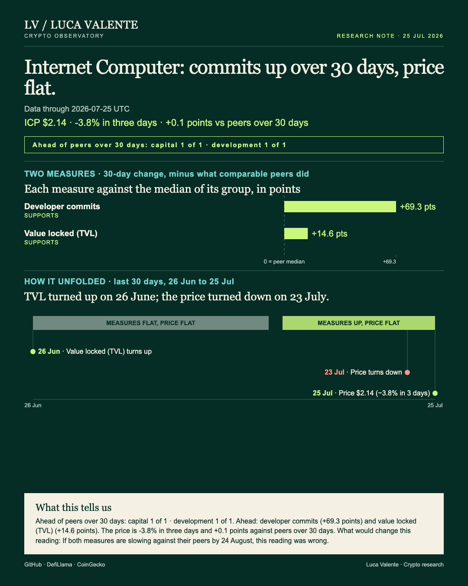
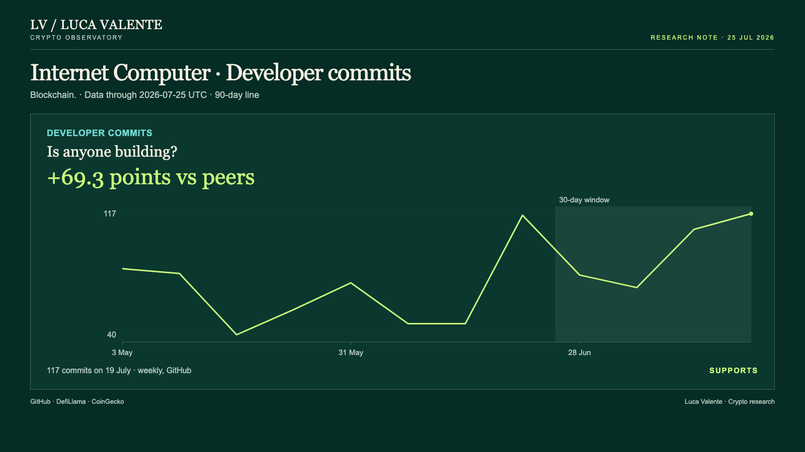
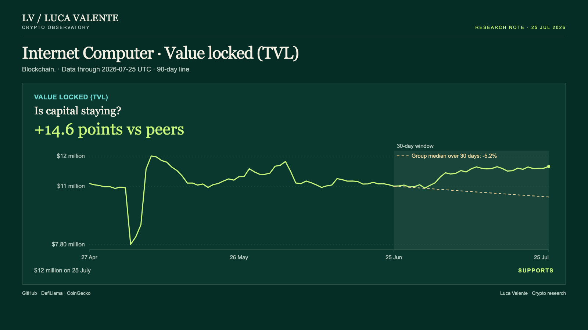

Training note, written on 24 September 2026 from data as of 25 July 2026. Not part of the published series.
66.4% More Commits, While ICP Moves With Its Group

Internet Computer's commits are up 66.4% in a month; why do the weeks inside that month show no steady climb? That gap matters: capital and development are the only two lines this note tracks, and both disagree with the price.
Numbers here run through 25 July, with the 30-day comparisons measured from 26 June; Internet Computer is a blockchain, and ICP is the chain's own token. This note reads two families of data: capital, the money in the chain's contracts, and development, the code shipped to its repositories. The number that doesn't add up sits inside development, not capital; I have no news to go with it, only the numbers below.
I first read that 66.4% jump as a climb, week after week. It isn't. Developer commits came to 117 in the week ending 25 July, up from 107 the week before: code changes logged to the project's repositories. Against the group's twenty-seven commit-reporting entities, Internet Computer included, the 30-day rise is 69.3 points ahead of a -3.0% median. Over the same window the weekly count went sideways: across its four weeks, no three ran the same direction.

Value locked, the money sitting in Internet Computer's contracts, closed 25 July at $12 million, up 0.8% from the day before; over 30 days it is up 9.4%, against a group median of -5.2%, a gap of 14.6 points. Value locked is counted in dollars; part of any 30-day move can come from the price of what's deposited. Over those same 30 days ICP's own price fell 3.3%, from $2.21 on 25 June to $2.14 on 25 July. Value locked turned up on 26 June, weeks before the price turned down on 23 July: between the two, capital led.

ICP closed 25 July at $2.14, down 0.9% in a day, 3.8% in three days and 3.3% over the same 30-day window. Against the -3.4% median of the thirty-two priced entities in its group, Internet Computer included, ICP is 0.1 points ahead. This note has no fees, no trading volume, no stablecoins or user measure for Internet Computer; the only two lines here are capital and development. None of that means the price owes the other lines anything; it only marks where the gap sits.
Where I stop holding this view is simple to state. If both measures are slowing against their peers by 24 August, this reading was wrong. What I'm reading now is capital and development both ahead of the pack while the token goes nowhere; if both slow against their peers by then, the edge this note describes has faded.
Before the price turned, capital had already moved; the commits got to 66.4% without three weeks pointing one way.
Sources: GitHub (developer commits), DefiLlama (value locked), CoinGecko (price).
Peer group: 36 chains tracked by DefiLlama. 'Net of the group' is the 30-day change minus the group's median.
Not financial advice. This is a research note based on public on-chain data.